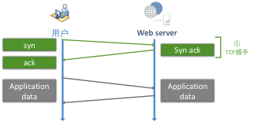
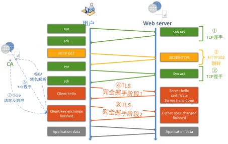

大型网站的 HTTPS 实践（二）-- HTTPS 对性能的影响
前言
HTTPS 在保护用户隐私，防止流量劫持方面发挥着非常关键的作用，但与此同时，HTTPS 也会降低用户访问速度，增加网站服务器的计算资源消耗。
本文主要介绍 https 对用户体验的影响。
HTTPS 对访问速度的影响
在介绍速度优化策略之前，先来看下 HTTPS 对速度有什么影响。影响主要来自两方面：
- 协议交互所增加的网络 RTT(round trip time)。
- 加解密相关的计算耗时。
下面分别介绍一下。
网络耗时增加
由于 HTTP 和 HTTPS 都需要 DNS 解析，并且大部分情况下使用了 DNS 缓存，为了突出对比效果，忽略主域名的 DNS 解析时间。
用户使用 HTTP 协议访问 http://www.baidu.com(或者 www.baidu.com) 时会有如下网络上的交互耗时：

图 1 HTTP 首个请求的网络耗时
可见，用户只需要完成 TCP 三次握手建立 TCP 连接就能够直接发送 HTTP 请求获取应用层数据，此外在整个访问过程中也没有需要消耗计算资源的地方。
接下来看 HTTPS 的访问过程，相比 HTTP 要复杂很多，在部分场景下，使用 HTTPS 访问有可能增加 7 个 RTT。如下图：

图 2 HTTPS 首次请求对访问速度的影响
HTTPS 首次请求需要的网络耗时解释如下：
- 三次握手建立 TCP 连接。耗时一个 RTT。
- 使用 HTTP 发起 GET 请求，服务端返回 302 跳转到 https://www.baidu.com 。需要一个 RTT 以及 302 跳转延时。
- 大部分情况下用户不会手动输入 https://www.baidu.com 来访问 HTTPS，服务端只能返回 302 强制浏览器跳转到 https。
- 浏览器处理 302 跳转也需要耗时。
- 三次握手重新建立 TCP 连接。耗时一个 RTT。
- 302 跳转到 HTTPS 服务器之后，由于端口和服务器不同，需要重新完成三次握手，建立 TCP 连接。
- TLS 完全握手阶段一。耗时至少一个 RTT。
- 这个阶段主要是完成加密套件的协商和证书的身份认证。
- 服务端和浏览器会协商出相同的密钥交换算法、对称加密算法、内容一致性校验算法、证书签名算法、椭圆曲线（非 ECC 算法不需要）等。
- 浏览器获取到证书后需要校验证书的有效性，比如是否过期，是否撤销。
- 解析 CA 站点的 DNS。耗时一个 RTT。
- 浏览器获取到证书后，有可能需要发起 OCSP 或者 CRL 请求，查询证书状态。
- 浏览器首先获取证书里的 CA 域名。
- 如果没有命中缓存，浏览器需要解析 CA 域名的 DNS。
- 三次握手建立 CA 站点的 TCP 连接。耗时一个 RTT。
- DNS 解析到 IP 后，需要完成三次握手建立 TCP 连接。
- 发起 OCSP 请求，获取响应。耗时一个 RTT。
- 完全握手阶段二，耗时一个 RTT 及计算时间。
- 完全握手阶段二主要是密钥协商。
- 完全握手结束后，浏览器和服务器之间进行应用层（也就是 HTTP）数据传输。
当然不是每个请求都需要增加 7 个 RTT 才能完成 HTTPS 首次请求交互。大概只有不到 0.01% 的请求才有可能需要经历上述步骤，它们需要满足如下条件：
- 必须是首次请求。即建立 TCP 连接后发起的第一个请求，该连接上的后续请求都不需要再发生上述行为。
- 必须要发生完全握手，而正常情况下 80% 的请求能实现简化握手。
- 浏览器需要开启 OCSP 或者 CRL 功能。Chrome 默认关闭了 ocsp 功能，firefox 和 IE 都默认开启。
- 浏览器没有命中 OCSP 缓存。Ocsp 一般的更新周期是 7 天，firefox 的查询周期也是 7 天，也就说是 7 天中才会发生一次 ocsp 的查询。
- 浏览器没有命中 CA 站点的 DNS 缓存。只有没命中 DNS 缓存的情况下才会解析 CA 的 DNS。
2.2 计算耗时增加
上节还只是简单描述了 HTTPS 关键路径上必须消耗的纯网络耗时，没有包括非常消耗 CPU 资源的计算耗时，事实上计算耗时也不小（30ms 以上），从浏览器和服务器的角度分别介绍一下：
- 浏览器计算耗时
- RSA 证书签名校验，浏览器需要解密签名，计算证书哈希值。如果有多个证书链，浏览器需要校验多个证书。
- RSA 密钥交换时，需要使用证书公钥加密 premaster。耗时比较小，但如果手机性能比较差，可能也需要 1ms 的时间。
- ECC 密钥交换时，需要计算椭圆曲线的公私钥。
- ECC 密钥交换时，需要使用证书公钥解密获取服务端发过来的 ECC 公钥。
- ECC 密钥交换时，需要根据服务端公钥计算 master key。
- 应用层数据对称加解密。
- 应用层数据一致性校验。
- 服务端计算耗时
- RSA 密钥交换时需要使用证书私钥解密 premaster。这个过程非常消耗性能。
- ECC 密钥交换时，需要计算椭圆曲线的公私钥。
- ECC 密钥交换时，需要使用证书私钥加密 ECC 的公钥。
- ECC 密钥交换时，需要根据浏览器公钥计算共享的 master key。
- 应用层数据对称加解密。
- 应用层数据一致性校验。
由于客户端的 CPU 和操作系统种类比较多，所以计算耗时不能一概而论。手机端的 HTTPS 计算会比较消耗性能，单纯计算增加的延迟至少在 50ms 以上。PC 端也会增加至少 10ms 以上的计算延迟。
服务器的性能一般比较强，但由于 RSA 证书私钥长度远大于客户端，所以服务端的计算延迟也会在 5ms 以上。
结束语
本系列的后续文章将进一步解释针对性的优化措施。